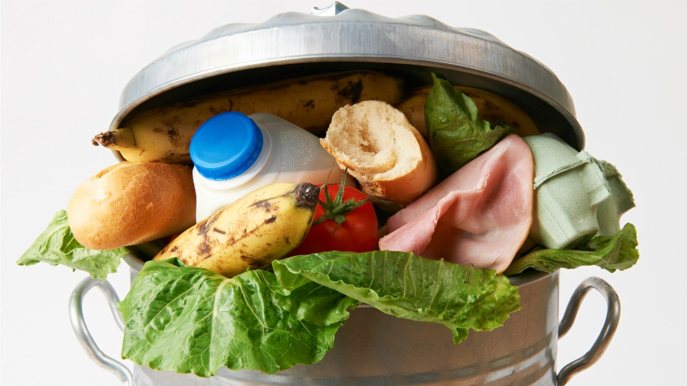

Information
- Studies have found that 30% to 40% of the food we produce in the United States is ultimately thrown away. 
- America throws away more than 38 million tons of food every year. That's the weight of 104 Empire State Buildings.
- Farmers and producers use around 25% of all of America's fresh water just to produce the food that nobody eats.